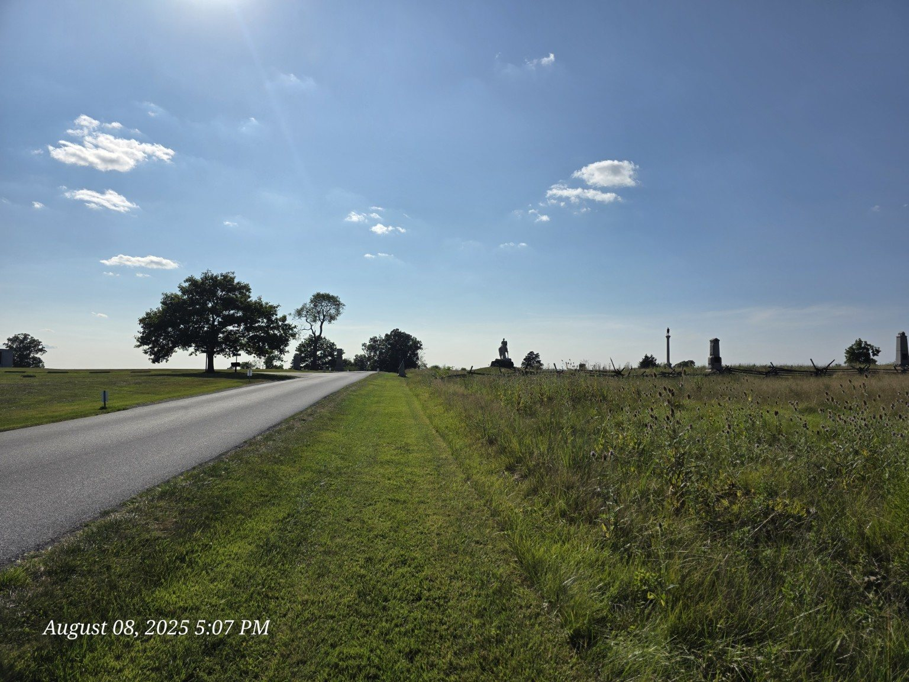
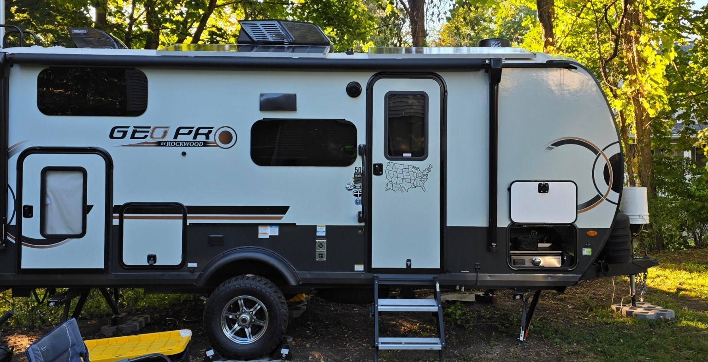
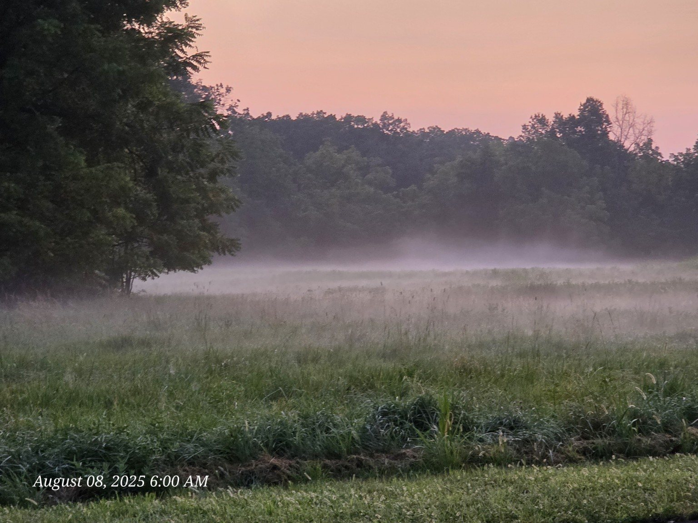
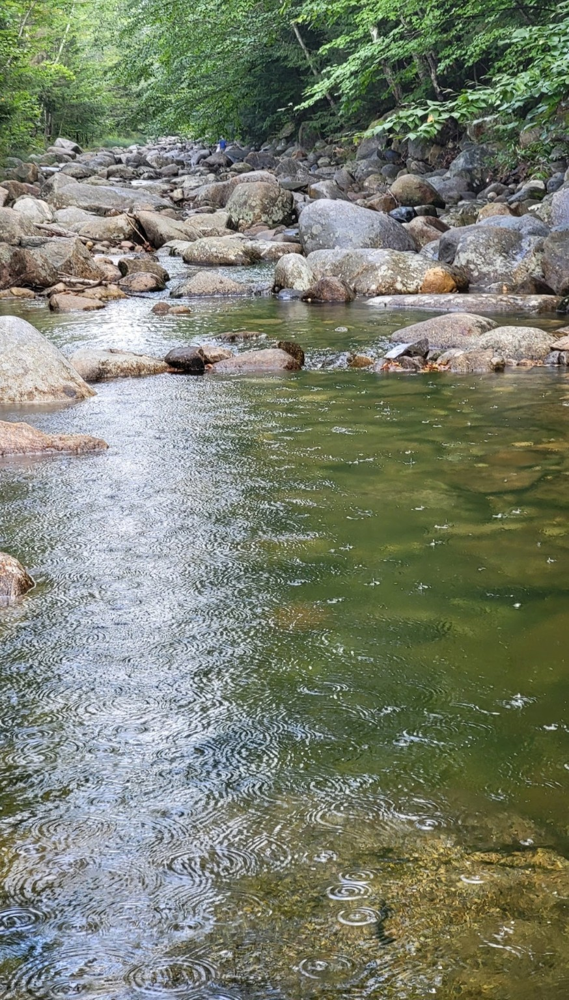
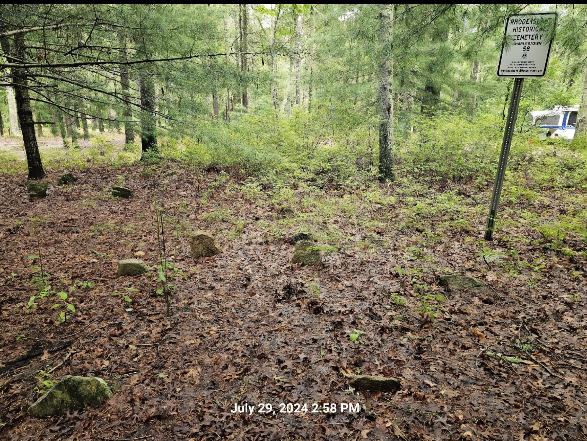
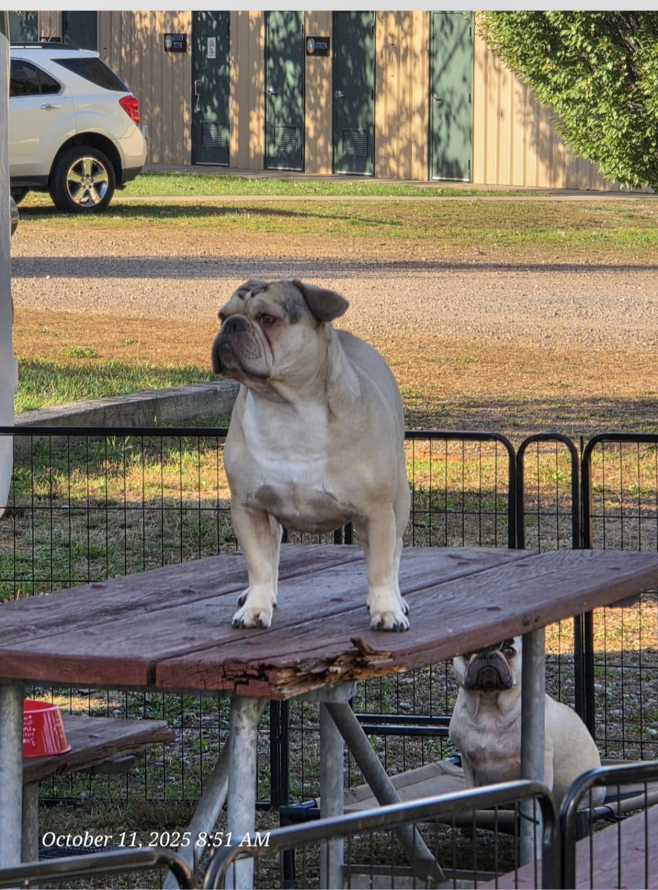
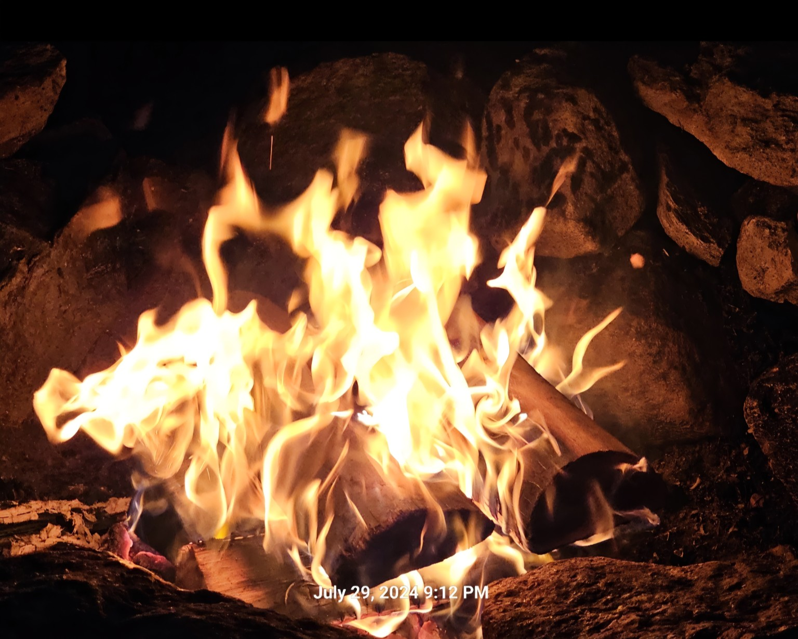
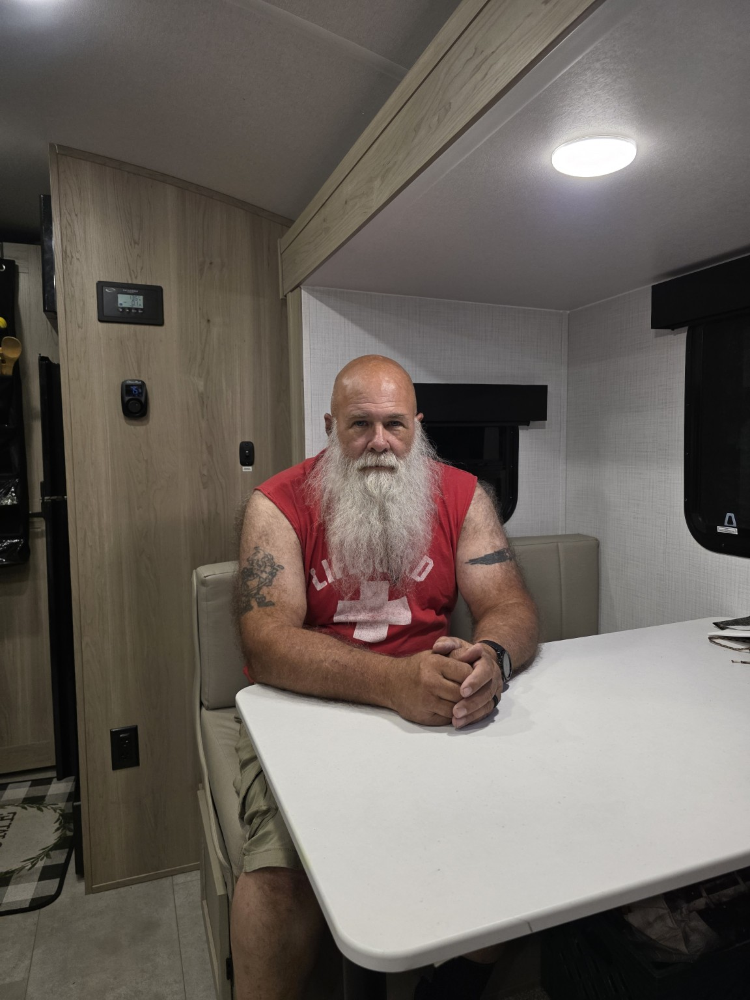

Campgrounds • history • family • friendship
Pull up a chair.
The fire is going.
Trail Tater is our rolling campfire: a place for campground stories, family adventures, hidden history, old cemeteries, amateur radio and the friends we meet along the road.
🥔 Real Tater ratings
📻 K1RHH on the road
🪦 History in unexpected places
Around the Campfire
Followers are fine.
We would rather make friends.
This is not a polished travel brochure. It is the real story of the places we camp, the history we stumble into, the things that go sideways, and the people who make the trip worth remembering.
Some pages begin with a beautiful sunrise. Others begin with a missing tent pole. Either way, there is usually a story worth telling.
Pull up a chair and say hello →
Latest full adventureGettysburg • 2025
The trip that gave Trail Tater its name.
Artillery Ridge became more than a campsite. It was our basecamp for battlefield history, family time, cemetery walks, campfire movie night, sunrise photographs and one collection of wonderfully odd local sodas.
Basecamp Artillery Ridge
Best moment Sunrise on historic ground
Final verdict 🥔🥔🥔🥔🥔
Read the Gettysburg story
The adventure journal
Every campsite gets a story.
Not just where we stayed, but what happened there, what we learned, who came along and what might bring us back.

2021–2023 • New Hampshire
Lost River Valley
The first campground that brought the family back for three consecutive years.
Open the campfire story →
2024 • Rhode Island
Charlestown
The camping trip that started our cemetery-walk tradition.
Open the journal →
2025 • Connecticut
Lake Compounce
Trail Tater’s first RV weekend, first map state, and first campground decal.
Start at the beginning →
2026 • Massachusetts
Plymouth
Trail Tater is now camped at Sandy Pond for a live Mayflower-ancestor family journey.
Open the Plymouth journal →Day 4 now liveThe Trail Tater map
Every pin has a campfire behind it.
Select a campground to visit the place where that chapter began. The map grows as the miles and stories do.
5Campgrounds
5States
2023Archive begins
∞Detours ahead
Loading the Trail Tater map…
More roads to wander
Trail Tater is bigger than camping.
📻
📷
🪦
👋
Campground Radio
K1RHH, portable operating, Scouts on the air and radio from the road.
Photo Stories
Sunrises, camp life, historic places and family moments.
Cemetery Discoveries
Old stones, veterans, symbols and history found beside the campsite.
Friends Along the Way
Scan the camper, send a note and keep the campfire conversation going.
The rolling basecamp
Meet the real Trail Tater.
A 2025 Forest River Rockwood Geo Pro G20BH built for family travel, history runs, solar camping and whatever interesting road catches our attention.
Geo Pro G20BH380W solar12V refrigerator
Honda EU2000i2014 Ram 1500Plenty of personality
The crew
The people—and dog—inside the story.

Ken
Driver, storyteller, history hunter, cemetery caretaker and chief navigator of interesting detours.
Lisa
Co-pilot, family anchor and the steady hand behind the adventures.
B
Billie
Scout, adventurer, sharp observer and highly qualified reviewer of Dad’s website ideas.
Stewie
Campground inspector, squirrel-patrol supervisor and chief treat quality-control officer.
Seen us at a campground?
You scanned the camper. Now pull up a chair.
TrailTater.com was made to turn a campground hello into a friendship that can continue long after everyone pulls out of the site.
{kind=link}